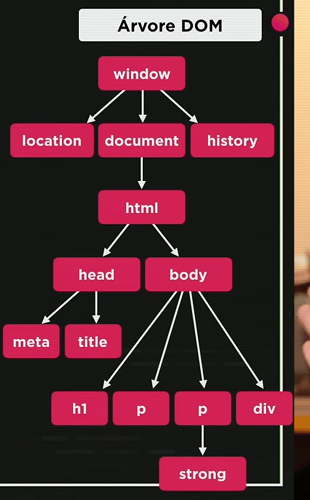

O que é DOM?
O DOM é como uma “ponte” entre o HTML e o JavaScript, permitindo que o JS entenda e altere a estrutura da página.. DOM significa Document Object Model (Modelo de Objeto do Documento) basicamente é um conjunto de objetos dentro do seu navegador que vai dar acesso aos componentes internos do seu website.
É uma representação do HTML (ou XML) como um objeto em árvore, que o navegador cria para que o JavaScript possa interagir com a página.
Tudo do javscript esta dentro de um objeto chamado window. Dentro o window nós temos varios outros objetos como location que diz qual é a localização do seu site, qual é a url, qual é a pagina atual e qual foi a pagina anterior. O document que é o documento atual e history que vai guardando de onde você veio e pra onde você vai...
Dentro do document existe um objeto muito importante chamado html e dentro do html nós temos o head e o body e etc.
Representação da arvore dom conforme descrito acima
Imagem arvore DOM

O DOM (Document Object Model) é uma árvore que representa toda a estrutura do HTML da sua página.
Cada elemento do HTML (como <div>, <p>, <h1>, etc.) é um nó dentro dessa árvore.
Saber navegar e se localizar nessa árvore é essencial, porque você pode acessar, modificar ou remover qualquer elemento da página usando JavaScript.
Como navegar e selecionar elementos no DOM?
Existem várias formas de selecionar elementos para manipular. Alguns métodos mais usados são:
-
Por Tag (Marca) → document.getElementsByTagName('p')
Aqui você consegue selecionar mais de um elemento, porque podem existir vários com a mesma tag (por exemplo, várias tags <p> no HTML). Esse método retorna uma coleção (HTMLCollection), então, para acessar um item específico, você precisa usar um índice, como [0]
-
Por ID → document.getElementById('meuID')
Essa forma seleciona um único elemento, pois IDs devem ser únicos na página. Você não precisa de colchetes porque o retorno é apenas um elemento.
-
Por Nome → document.getElementsByName('meuNome')
Muito usado em formulários, esse método seleciona elementos pelo atributo name. Ele retorna uma coleção, então você também precisa percorrê-la para acessar os elementos.
-
Por Classe → document.getElementsByClassName('minhaClasse')
Seleciona todos os elementos que possuem a classe especificada. Retorna uma coleção (HTMLCollection), então, para alterar todos, você deve usar um loop ou forEach() (com querySelectorAll).
-
Por Seletor CSS → document.querySelector('.classe') ou document.querySelectorAll('.classe') ESTE É O MAIS RECOMENDADO
Essa é a forma mais moderna e flexível, pois permite usar qualquer seletor CSS (classe, ID, tag, combinadores, etc.). querySelector retorna o primeiro elemento que corresponde ao seletor, enquanto querySelectorAll retorna todos os elementos correspondentes em uma NodeList, que pode ser percorrida com forEach().